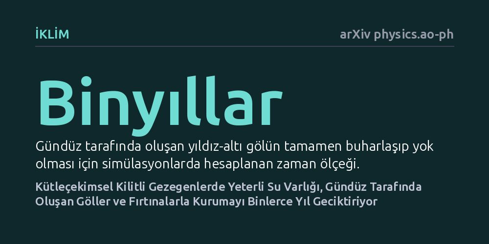

IKLIM · arXiv physics.ao-ph · 2026-10-13
Araştırmacılar, bir yüzü sürekli yıldızına bakan gezegenlerde sınırlı su miktarının iklimi nasıl etkilediğini simülasyonlarla inceledi. Yeterli su varlığında oluşan kalıcı bir göl ve fırtına sisteminin, gündüz tarafının kurumasını binlerce yıl geciktirdiği saptandı.
Bir yüzü sürekli yıldıza bakan ötegezegenlerin gündüz taraflarının hemen çölleşmeyip binlerce yıl boyunca göller ve yağışlarla yaşama elverişli kalabileceğini gösterir.

Güneş sistemimizdeki gezegenler kendi eksenleri etrafında dönerek düzenli bir gece ve gündüz döngüsü yaşar. Ancak Güneş sistemi dışındaki birçok ötegezegen, yıldızlarının uyguladığı güçlü çekim kuvveti nedeniyle kendi eksenindeki dönüşü ile yıldızı etrafındaki dolanımını eşitlemiştir. Tıpkı Ay'ın Dünya'ya hep aynı yüzünü göstermesi gibi, bu gezegenlerin de bir yarısı sürekli kavurucu bir gündüzü, diğer yarısı ise ebedi karanlık ve dondurucu bir geceyi yaşar. Bu aşırı zıt ortamlar, alışıldık gezegen iklimlerinden çok farklı bir atmosfer dinamiği ortaya çıkarır.
Bilim insanlarının yanıt aradığı temel soru, bu gezegenlerde sınırlı miktarda su bulunduğunda su döngüsünün nasıl işleyeceğidir. Genel beklenti, gündüz yüzündeki tüm suyun hızla buharlaşıp gezegen çapındaki rüzgarlarla soğuk gece tarafına taşınması ve orada buz olarak kilitlenip gündüz tarafını tamamen çölleştirmesidir. Eğer gündüz yüzü hemen kuruyorsa, bu gezegenlerin sıvı suya ve yaşama ev sahipliği yapma ihtimali çok düşüktür. Bu nedenle suyun gündüz tarafında ne kadar süre sıvı kalabileceğini anlamak, evrende yaşanabilir dünyaları belirlemek açısından kritik bir önem taşır.
Araştırma ekibi bu mekanizmayı test etmek için teleskop gözlemlerinin yerine genel dolaşım modelleri (GCM) adı verilen küresel iklim simülasyonlarını kullandı. Bu bilgisayar modelleri, bir gezegenin atmosferindeki rüzgar akışlarını, ısı transferini ve nem taşınımını temel akışkanlar mekaniği ve termodinamik denklemleriyle hesaplar.
Ekip, kütleçekimsel kilitli gezegenler için idealize edilmiş bir atmosfer yapısı kurarak yüzeydeki toplam su (nem) miktarını sistematik biçimde değiştirdi. Simülasyonlar, buharlaşma hızının yüzeyde kalan sıvı derinliğine bağlı olarak nasıl sınırlandığını ve atmosferdeki süper dönen hava akımlarının nemi gece tarafına ne hızla sürüklediğini binyıllık zaman ölçeklerinde adım adım takip etti.
Simülasyon sonuçları, su rezervinin büyüklüğüne bağlı olarak gezegen ikliminde iki farklı rejim ortaya çıktığını gösterdi. Düşük su rezervine sahip senaryolarda beklendiği gibi gündüz tarafı hızla çölleşti ve tüm nem soğuk gece tarafında hapsoldu. Ancak su miktarı belirli bir eşiğin üzerine çıktığında, gündüz tarafının kuruma süreci beklenmedik şekilde çok uzun bir süre gecikti.
Bu gecikmenin ardındaki ana etken, yıldızın tam tepede durduğu noktanın hemen doğusunda 'yıldız-altı göl' adı verilen yerel bir su birikintisinin oluşmasıydı. Bu gölün üzerinde, Dünya'daki şiddetli gök gürültülü fırtınalara benzeyen yerel bir konvektif fırtına sistemi gelişti. Bu fırtına sistemi, buharlaşan suyu yukarı çekip hızla soğutarak tekrar aynı bölgeye yağdırdı ve nemin gece tarafına kaçmasını engelledi. Göl kuruduktan sonra dahi fırtına sistemi varlığını koruyarak kuruma sürecini binlerce yıl uzattı.
Elde edilen bulgular, kütleçekimsel kilitli dünyaların düşünüldüğü kadar hızlı bir biçimde kurak çöllere dönüşmeyebileceğini gösteriyor. Yüzeydeki su derinliğinin buharlaşmayı sınırlandırma biçimi, gölün ve gündüz tarafındaki nemli iklimin ömrünü doğrudan belirliyor.
Gölün ve nemli havanın binlerce yıl boyunca varlığını sürdürebilmesi, yüzeydeki zayıf akıntılar veya jeolojik hareketlerle gerçekleşecek çok küçük su taşınımlarının bile gündüz tarafında kalıcı bir ılıman iklimi korumaya yetebileceğini ortaya koyuyor. Bu durum, gelecekte James Webb gibi gelişmiş uzay teleskoplarıyla ötegezegen atmosferleri incelenirken bulut ve nem dağılımlarını doğru yorumlamak için önemli bir kuramsal temel sağlıyor.